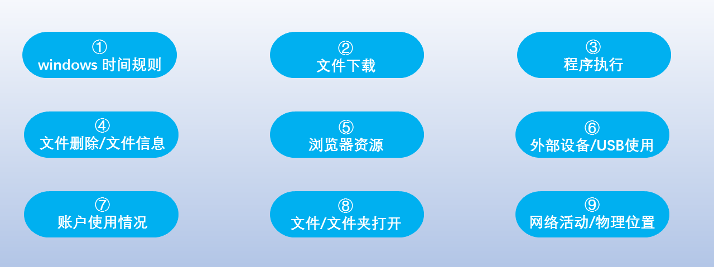

干货 | Windows取证分析基础知识大全，赶快收藏！
以下文章来源于效率源 ，作者源妹
效率源是致力于电子数据取证、政企数据安全、大数据信息化等产品和相关服务的国家高新技术企业，是国家科技部重点新产品研制单位。电子数据取证行业佼佼者，电子数据恢复行业全球前三，在全球130多个国家和地区有10000+客户。
想要做好取证分析工作，工具和技术只是辅助，思路才是核心和重点。本文将详细分享Microsoft Windows操作系统的基础数字取证知识，了解数据的存放位置和对应部件，便于快速确定关键证据，内容包括windows时间规则、文件下载、程序执行、文件删除/文件信息、浏览器资源、外部设备/USB使用、账户使用情况、文件/文件夹打开、网络活动/物理位置。

01
windows 时间规则
创建文件：文件修改、文件访问、文件metadata时间改变
访问文件：文件访问时间改变（NTFS win7+不变）
文件修改：文件修改，文件metadata时间改变
文件重命名：文件metadata时间改变
拷贝文件：文件修改时间继承自原始，文件访问，文件metadata，文件创建时间改变
文件移动：
1）同卷移动文件：文件metadata时间改变
2）跨卷移动文件
• 通过系统命令：修改时间来自原始文件，文件访问，文件metadata，文件创建时间改变
• 通过复制粘贴：文件修改，文件metadata，文件创建都来自原始文件，访问时间为复制粘贴时间
02
文件下载
XP：NTUSER.DAT\Software\Microsoft\Windows\CurrentVersion\Explorer\ComDlg32\OpenSaveMRU
Win7/8/10：
NTUSER.DAT\Software\Microsoft\Windows\CurrentVersion\Explorer\ComDlg32\OpenSavePIDlMRU
XP：
%USERPROFILE%\LocalSettings\ApplicationData\Microsoft\Outlook
Win7/8/10：
%USERPROFILE%\AppData\Local\Microsoft\Outlook
OLK：
HKEY_CURRENT_USER\Software\Microsoft\Office\对应版本\Outlook\Security
XP：
C:\Documents and Settings\<username>\Application\Skype\<skype-name>
Win7/8/10：
C:\%USERPROFILE%\AppData\Roaming\Skype\<skype-name>
1）internet explorer
IE8-9：
%USERPROFILE%\AppData\Roaming\Microsoft\Windows\IEDownloadHistory\index.dat
IE10-11：
%USERPROFILE%\AppData\Local\Microsoft\Windows\WebCache\WebCacheV*.dat
2）firefox
v3-25：
%userprofile%\AppData\Roaming\Mozilla\ Firefox\Profiles\<random text>.default\downloads.sqlite
v26+：
%userprofile%\AppData\Roaming\Mozilla\ Firefox\Profiles\<random text>.default\places.sqlite Table:moz_annos
3）chrome
Win7/8/10：
%USERPROFILE%\AppData\Local\Google\Chrome\User Data\Default\History
1）firefox
XP：
%userprofile%\Application Data\Mozilla\ Firefox\Profiles\<random text>.default\downloads.sqlite
Win7/8/10：
%userprofile%\AppData\Roaming\Mozilla\ Firefox\Profiles\<random text>.default\downloads.sqlite
2）Internet Explorer
IE8-9：
%USERPROFILE%\AppData\Roaming\Microsoft\Windows\ IEDownloadHistory\
IE10-11：
%USERPROFILE%\AppData\Local\Microsoft\Windows\WebCache\ WebCacheV*.dat
从XP SP2开始，当文件通过浏览器从“Internet区域”下载到NTFS卷时，会向文件中添加备用数据流。
03
程序执行
• NTUSER.DAT HIVE
• NTUSER.DAT\Software\Microsoft\Windows\Currentversion\Explorer\UserAssist\ {GUID}\Count
C:\Users\<profile>\AppData\Local\ConnectedDevicesPlatform\L.<profile>\ActivitiesCache.db
NTUSER.DAT\Software\Microsoft\Windows\Current Version\Search\RecentApps
XP：
SYSTEM\CurrentControlSet\Control\SessionManager\AppCompatibility
Win7/8/10：
SYSTEM\CurrentControlSet\Control\Session Manager\AppCompatCache
Win7/8/10：
C:\%USERPROFILE%\AppData\Roaming\Microsoft\Windows\Recent\ AutomaticDestinations
Win7/8/10：
C:\Windows\AppCompat\Programs\Amcache.hve
SOFTWARE\Microsoft\WindowsNT\CurrentVersion\SRUM\Extensions {d10ca2fe-6fcf4f6d-848e-b2e99266fa89} = Application Resource Usage Provider C:\Windows\ System32\SRU\
• SYSTEM\CurrentControlSet\Services\bam\UserSettings\{SID}
• SYSTEM\CurrentControlSet\Services\dam\UserSettings\{SID}
XP：
NTUSER.DAT\Software\Microsoft\Windows\CurrentVersion\Explorer\ComDlg32\ LastVisitedMRU
Win7/8/10：
NTUSER.DAT\Software\Microsoft\Windows\CurrentVersion\Explorer\ComDlg32\ LastVisitedPidlMRU
WinXP/7/8/10：
C:\Windows\Prefetch
04
文件删除/文件信息
• NTUSER.DAT HIVE NTUSER.DAT\Software\Microsoft\Search Assistant\ACMru\####
C:\%USERPROFILE%\AppData\Local\Microsoft\Windows\Explorer
WinXP/Win8|8.1：
在启用了家庭组的任何地方自动创建。
Win7/8/10：
在任何地方自动创建并通过UNC路径（本地或远程）访问。
Internet Explorer
IE6-7：
%USERPROFILE%\LocalSettings\History\History.IE5
IE8-9：
%USERPROFILE%\AppData\Local\Microsoft\WindowsHistory\History.IE5
IE10-11：
%USERPROFILE%\AppData\Local\Microsoft\Windows\WebCache\WebCacheV*.dat
Win7/8/10 NTUSER.DAT Hive：
NTUSER.DAT\Software\Microsoft\Windows\CurrentVersion\Explorer\WordWheelQuery
隐藏的系统文件夹
• C:\$Recycle.bin
隐藏的系统文件夹
• C:\RECYCLER" 2000/NT/XP/2003
05
浏览器资源
1）Internet Explorer
IE6-7：
%USERPROFILE%\Local Settings\History\History.IE5
IE8-9：
%USERPROFILE%\AppData\Local\Microsoft\Windows\History\ History.IE5
IE10, 11, Edge：
%USERPROFILE%\AppData\Local\Microsoft\Windows\ WebCache\WebCacheV*.dat
2）Firefox
XP：
%USERPROFILE%\Application Data\Mozilla\Firefox\Profiles\<random text>.default\places.sqlite
Win7/8/10：
%USERPROFILE%\AppData\Roaming\Mozilla\Firefox\ Profiles\<random text>.default\places.sqlite
3）Chrome
XP：
%USERPROFILE%\Local Settings\Application Data\Google\Chrome\User Data\Default\History
Win7/8/10：
%USERPROFILE%\AppData\Local\Google\Chrome\User Data\ Default\History
4）QQ浏览器
%USERPROFILE%\AppData\Local\Tencent\QQBrowser\User Data\Default\History
1）Internet Explorer
HKEY_CURRENT_USER\Software\Microsoft\Windows\CurrentVersion\Explorer\User Shell Folders下Favorites键值
Edge:
%USERPROFILE%\AppData\Local\Packages\microsoft.
microsoftedge_<APPID>\AC\MicrosoftEdge\Cookies
2）Firefox
XP：
%USERPROFILE%\Application Data\Mozilla\Firefox\Profiles\<random text>.default\places.sqlite
Win7/8/10：
%USERPROFILE%\AppData\Roaming\Mozilla\Firefox\ Profiles\<random text>.default\places.sqlite
3）Chrome
XP：
%USERPROFILE%\Local Settings\Application Data\Google\Chrome\User Data\Default\Bookmarks
Win7/8/10：
%USERPROFILE%\AppData\Local\Google\Chrome\User Data\ Default\Bookmarks
4）QQ浏览器
• %USERPROFILE%\AppData\Local\Tencent\QQBrowser\User Data\Default\QQ号\Bookmarks_01
• %USERPROFILE%\AppData\Local\Tencent\QQBrowser\User Data\Default\Bookmarks_01
1）Internet Explorer
IE8-9：
%USERPROFILE%\AppData\Roaming\Microsoft\Windows\Cookies
IE10：
%USERPROFILE%\AppData\Roaming\Microsoft\Windows\Cookies
IE11：
%USERPROFILE%\AppData\Local\Microsoft\Windows\INetCookies
Edge：
%USERPROFILE%\AppData\Local\Packages\microsoft.
microsoftedge_<APPID>\AC\MicrosoftEdge\Cookies
2）Firefox
XP：
%USERPROFILE%\Application Data\Mozilla\Firefox\Profiles\<random
text>.default\cookies.sqlite
Win7/8/10：
%USERPROFILE%\AppData\Roaming\Mozilla\Firefox\
Profiles\<randomtext>.default\cookies.sqlite
3）Chrome
XP：
%USERPROFILE%\Local Settings\Application Data\Google\Chrome\User
Data\Default\Local Storage\
Win7/8/10：
%USERPROFILE%\AppData\Local\Google\Chrome\User Data\
Default\Local Storage\
4）QQ浏览器
%USERPROFILE%\AppData\Local\Tencent\QQBrowser\User Data\Default\Cookies
1）Internet Explorer
IE8-9：
%USERPROFILE%\AppData\Local\Microsoft\Windows\Temporary Internet Files\Content.IE5
IE10：
%USERPROFILE%\AppData\Local\Microsoft\Windows\Temporary Internet Files\Content.IE5
IE11：
%USERPROFILE%\AppData\Local\Microsoft\Windows\INetCache\IE
Edge：
%USERPROFILE%\AppData\Local\Packages\microsoft.microsoftedge_<APPID>\AC\MicrosoftEdge\Cache
2）Firefox
XP：
%USERPROFILE%\Local Settings\ApplicationData\Mozilla\Firefox\ Profiles\<randomtext>.default\Cache
Win7/8/10：
%USERPROFILE%\AppData\Local\Mozilla\Firefox\ Profiles\<randomtext>.default\Cache
3）Chrome
XP：
%USERPROFILE%\Local Settings\Application Data\Google\Chrome\User Data\Default\Cache - data_# and f_######
Win7/8/10：
%USERPROFILE%\AppData\Local\Google\Chrome\User Data\ Default\Cache\ - data_# and f_######
Win7/8/10：
%APPDATA%\Roaming\Macromedia\FlashPlayer\#SharedObjects\<randompr ofileid>
1）Internet Explorer
Win7/8/10：
%USERPROFILE%/AppData/Local/Microsoft/Internet Explorer/ Recovery
2）Firefox
Win7/8/10：
%USERPROFILE%\AppData\Roaming\Mozilla\Firefox\Profiles\<randomtext>.default\sessionstore.js
3）Chrome
Win7/8/10：
%USERPROFILE%\AppData\Local\Google\Chrome\User Data\ Default\
文件=当前会话，当前打开的标签，最后一次会话，最后的标签
06
外部设备/USB使用
• SYSTEM\CurrentControlSet\Enum\USBSTOR
• SYSTEM\CurrentControlSet\Enum\USB
1）即插即用日志文件(第一次)
XP：
C:\Windows\setupapi.log
Win7/8/10：
C:\Windows\inf\setupapi.dev.log
2）（第一次，最后一次，拔出）(在Win7/8/10)
System Hive：
\CurrentControlSet\Enum\USBSTOR\Ven_Prod_Version\USBSerial#\Properties\ {83da6326-97a6-4088-9453-a19231573b29}\####
0064 = 第一次安装(Win7-10)
0066 = 最后一次连接 (Win8-10)
0067 = 最后一次拔出 (Win8-10)
• 查找GUID从SYSTEM\MountedDevices
• NTUSER.DAT\Software\Microsoft\Windows\CurrentVersion\Explorer\ MountPoints2
Win7/8/10：
%system root%\System32\winevt\logs\System.evtx
SOFTWARE\Microsoft\WindowsNT\CurrentVersion\ ENDMgmt
XP：
找到ParentIdPrefix – SYSTEM\CurrentControlSet\Enum\ USBSTOR
Win7/8/10：
• SOFTWARE\Microsoft\Windows Portable Devices\Devices
• SYSTEM\MountedDevices
XP：
%USERPROFILE%\Recent
Win7/8/10：
• %USERPROFILE%\AppData\Roaming\Microsoft\Windows\ Recent
• %USERPROFILE%\AppData\Roaming\Microsoft\Office\Recent
07
账户使用情况
• C:\windows\system32\config\SAM
• SAM\Domains\Account\Users
• C:\windows\system32\config\SAM
• SAM\Domains\Account\Users
Win7/8/10：
%SYSTEM ROOT%\System32\winevt\logs\Security.evtx
所有事件ID对应的系统日志
7034 - 服务意外崩溃
7035 - 服务发送了启动/停止控制
7036 - 服务已启动或已停止
7040 - 启动类型已更改（Boot | On Request | Disabled）
7045 - 系统上安装了一项服务（Win2008R2 +）
4697 - 系统上安装了一项服务（来自安全日志）
Win7/8/10：
Event ID 4624
Win7/8/10：
%SYSTEM ROOT%\System32\winevt\logs\Security.evtx
Win7/8/10：
%system root%\System32\winevt\logs\Security.evtx
08
文件/文件夹打开
XP：
NTUSER.DAT\Software\Microsoft\Windows\CurrentVersion\Explorer\ComDlg32\ OpenSaveMRU
Win7/8/10：
NTUSER.DAT\Software\Microsoft\Windows\CurrentVersion\Explorer\ComDlg32\OpenSavePIDlMRU
NTUSER.DAT：
NTUSER.DAT\Software\Microsoft\Windows\CurrentVersion\Explorer\RecentDocs
Win7/8/10：
C:\%USERPROFILE%\AppData\Roaming\Microsoft\Windows\Recent\AutomaticDestinations
访问Explorer：
• USRCLASS.DAT\Local Settings\Software\Microsoft\Windows\Shell\Bags
• USRCLASS.DAT\Local Settings\Software\Microsoft\Windows\Shell\BagMRU
访问桌面：
• NTUSER.DAT\Software\Microsoft\Windows\Shell\BagMRU
• NTUSER.DAT\Software\Microsoft\Windows\Shell\Bags
XP：
C:\%USERPROFILE%\Recent
Win7/8/10：
C:\%USERPROFILE%\AppData\Roaming\Microsoft\Windows\Recent\
C:\%USERPROFILE%\AppData\Roaming\Microsoft\Office\Recent\
WinXP/7/8/10：
C:\Windows\Prefetch
XP：
NTUSER.DAT\Software\Microsoft\Windows\CurrentVersion\Explorer\ComDl32\ LastVisitedMRU
Win7/8/10：
NTUSER.DAT\Software\Microsoft\Windows\CurrentVersion\Explorer\ComDlg32\ LastVisitedPidlMRU
Internet Explorer
IE6-7：
%USERPROFILE%\Local Settings\History\ History.IE5
IE8-9：
%USERPROFILE%\AppData\Local\Microsoft\Windows\History\History.IE5
IE10-11
%USERPROFILE%\AppData\Local\Microsoft\Windows\WebCache\WebCacheV*.dat
NTUSER.DAT\Software\Microsoft\Office\VERSION
• 14.0 = Office 2010
• 11.0 = Office 2003
• 12.0 = Office 2007
• 10.0 = Office XP
NTUSER.DAT\Software\Microsoft\Office\VERSION\UserMRU\LiveID_####\FileMRU
• 15.0 = Office 365
09
网络活动/物理位置
SYSTEM Hive：
SYSTEM\CurrentControlSet\Control\TimeZoneInformation
1）Internet Explorer
IE6-8：
%USERPROFILE%\AppData\Roaming\Microsoft\Windows\Cookies
IE10：
%USERPROFILE%\AppData\Roaming\Microsoft\Windows\Cookies
IE11：
%USERPROFILE%\AppData\Local\Microsoft\Windows\InetCookies
2）Firefox
XP：
%USERPROFILE%\Application Data\Mozilla\Firefox\Profiles\<randomtext>.default\ cookies.sqlite
Win7/8/10：
%USERPROFILE%\AppData\Roaming\Mozilla\Firefox\Profiles\<randomtext>.default\cookies.sqlite
3）Chrome
XP：
%USERPROFILE%\Local Settings\ApplicationData\Google\Chrome\User Data\Default\ Local Storage
Win7/8/10：
%USERPROFILE%\AppData\Local\Google\Chrome\User Data\Default\Local Storage
Win7/8/10 SOFTWARE HIVE：
• SOFTWARE\Microsoft\Windows NT\CurrentVersion\NetworkList\Signatures\Unmanaged
• SOFTWARE\Microsoft\Windows NT\CurrentVersion\NetworkList\Signatures\Managed
• SOFTWARE\Microsoft\Windows NT\CurrentVersion\NetworkList\Nla\Cache
Microsoft-Windows-WLAN-AutoConfig Operational.evtx
Internet Explorer
IE6-7：
%USERPROFILE%\Local Settings\History\History.IE5
IE8-9：
%USERPROFILE%\AppData\Local\Microsoft\Windows\History\History.IE5
IE10-11：
%USERPROFILE%\AppData\Local\Microsoft\Windows\WebCache\WebCacheV*.dat Firefox
XP：
%userprofile%\Application Data\Mozilla\Firefox\Profiles\<randomtext>.default\places.sqlite
Win7/8/10：
%userprofile%\AppData\Roaming\Mozilla\Firefox\Profiles\<randomtext>.default\places.sqlite
• SOFTWARE\Microsoft\WindowsNT\CurrentVersion\SRUM\Extensions
• {973F5D5C-1D90-4944-BE8E-24B94231A174} = Windows Network Data Usage Monitor
• {DD6636C4-8929-4683-974E-22C046A43763} = Windows Network Connectivity Usage Monitor
• SOFTWARE\Microsoft\WlanSvc\Interfaces\ C:\Windows\System32\SRU\